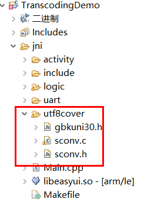

UTF-8编码
目前系统内仅支持UTF-8编码，例如文本框等控件，也只能正常显示UTF-8编码的字符串。如果要正常显示其他的编码，需要自行转码。
sconv
sconv是一个转码的开源库，我们借助它来进行utf-8和gbk之间编码的转换。
准备
下载sconv源文件，并将它解压到我们项目 jni文件夹下。

UTF-8 转 GBK
引用头文件
#include <string> #include "utf8cover/sconv.h"添加函数
string utf8_to_gbk(const char* utf8_str) { int size = sconv_utf8_to_unicode(utf8_str, -1, NULL, 0); wchar *unicode = new wchar[size / 2 + 1]; size = sconv_utf8_to_unicode(utf8_str, -1, unicode, size); unicode[size / 2] = 0; size = sconv_unicode_to_gbk(unicode, -1, NULL, 0); char *ansi_str = new char[size + 1]; size = sconv_unicode_to_gbk(unicode, -1, ansi_str, size); ansi_str[size] = 0; string gbk(ansi_str, size); delete[] ansi_str; delete[] unicode; return gbk; }- 使用刚才的函数进行编码转换，例子如下：
const char* utf8_str = "这是utf8编码"; string gbk = utf8_to_gbk(utf8_str); LOGD("转换后，共%d字节", gbk.size()); for (size_t i = 0; i < gbk.size(); ++i) { LOGD("第%d字节 = %02X", i, gbk.data()[i]); }
GBK 转 UTF-8
引用头文件
#include <string> #include "utf8cover/sconv.h"添加函数
string gbk_to_utf8(const char* gbk_str) { int size = sconv_gbk_to_unicode(gbk_str, -1, NULL, 0); wchar *unicode_str = new wchar[size / 2 + 1]; size = sconv_gbk_to_unicode(gbk_str, -1, unicode_str, size); unicode_str[size / 2] = 0; size = sconv_unicode_to_utf8(unicode_str, -1, NULL, 0); char *utf8_str = new char[size + 1]; size = sconv_unicode_to_utf8(unicode_str, -1, utf8_str, size); utf8_str[size] = 0; string utf8(utf8_str, size); delete[] unicode_str; delete[] utf8_str; return utf8; }- 使用刚才的函数进行编码转换，例子如下：
//方便测试，这里构造一个gbk编码数组， 其内容为“这是gbk编码” const char gbk_str[] = {0xd5, 0xe2, 0xca, 0xc7, 0x67, 0x62, 0x6b, 0xb1, 0xe0, 0xc2, 0xeb,0}; string utf8 = gbk_to_utf8(gbk_str); LOGD("转换后，共%d字节", utf8.size()); LOGD("内容是：%s", utf8.c_str());